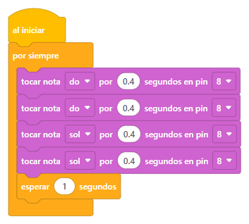
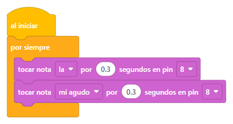
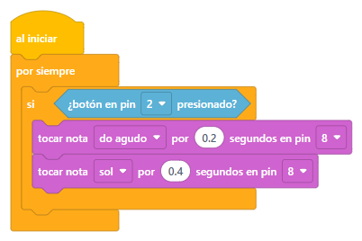

Tu Arduino ya sabe ver y decidir…
¡hoy le damos voz!
🔊 Sube el volumen del computador: hoy las slides suenan.
Antes de partir
Luz ya tiene y decidir ya sabe…
hoy le damos voz 🔊
Antes de hacer ruido
440 veces por segundo · un sonido normalito
Pocas vibraciones = sonido grave (como un tambor). Muchas = agudo (como un pajarito).
¿Y cómo hace temblar el aire?
Adentro tiene un discofinito que se dobla apenas le llega electricidad.
Si lo hacemos doblarse y volver cientos de veces por segundo, empuja el aire… y eso es el sonido. 🎶
Ojo con esto
Trae su propio ritmo adentro: le das electricidad y hace «biiip». Siempre el mismo tono.
Se reconoce porque abajo está tapado con una calcomanía.
No sabe hacer nada solo: hay que decirle a qué velocidad vibrar. Por eso puede tocar notas.
Se reconoce porque abajo se le ve el circuito verde.
Hoy usamos el pasivo: es el único que puede hacer música. 🎹
Un bloque nuevo
tocar nota la por 0.5 segundos en pin 8
Está en la categoría Sonido, la rosada.
Se elige del menú: do, re, mi… y más arriba, «do agudo», «re agudo»… Cada nota es una velocidad de vibración: más aguda = más rápido.
Cuánto dura la nota. El programa espera a que termine antes de pasar al bloque siguiente.
Cuando se acaba su tiempo, el buzzer queda en silencio. ¿Quieres una pausa entre notas? Usa esperar.
Pruébalo tú
tocar nota do por 0.5 segundos en pin 8
Cada nota vibra a su propia velocidad. ¡Toca las teclas y escucha!
¡Manos a la obra!
El buzzer tiene un lado marcado con +: ese va al pin. El otro, a tierra.
¡A tocar!

Práctica rápida

Dos notas, la y mi agudo, que se turnan rapidito. ¡Eso es todo!
¿Y si cambias el 0.3 por 0.08? ¿Y por 0.8?
Proyecto: sketches/sesion-05/sirena/.
Un repaso rápido
Hoy el botón vuelve a trabajar. ¿Te acuerdas de la resistencia escondida adentro del Arduino?
Por eso basta con si ¿botón en pin 2 presionado?: «¿lo están apretando?».
⭐ Proyecto de la sesión
Junta lo de hoy con lo de la sesión pasada: si aprietan el botón… suena la melodía.

⭐ Reto de la sesión
Con tres botones y un buzzer puedes armar un mini piano: cada botón, una nota distinta.
Pista: cada botón va entre su pin y GND, sin resistencia, y tiene su propio ¿botón en pin … presionado?
Duelo de cerebritos
Lo lograste
Hoy le diste voz: notas, melodías y hasta una sirena.
Y lo mejor: lo juntaste con el botón. 🔔
Cosas que se mueven: el servomotor, el músculo de verdad. ¡Empezamos a construir el paso a nivel!